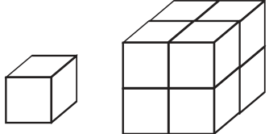
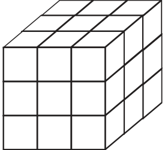
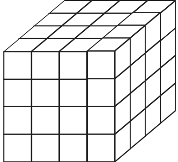
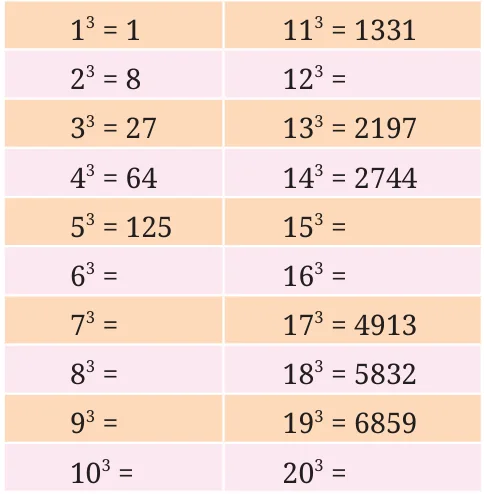
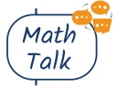

You know the word cube from geometry. A cube is a solid figure all of whose all sides meet at right angles and are equal. How many cubes of side 1 cm make a cube of side 2 cm?
How many cubes of side 1 cm will make a cube of side 3 cm?

Consider the numbers 1, 8, 27, ... These numbers are called perfect cubes. Can you see why they are named so? Each of them is obtained by multiplying a number by itself three times. We note that
\(1 = 1 \times 1 \times 1 8 = 2 \times 2 \times 2 27 = 3 \times 3 \times 3\)

Is 9 a cube? We see that \(2 \times 2 \times 2 = 8\) and \(3 \times 3 \times 3 = 27\). This shows that 9 is not a perfect cube. Nor is any number from 10 to 26. Can you estimate the number of unit cubes in a cube with an edge length of 4 units? It has 64 unit cubes! If you notice carefully, each layer of this cube has \(4 \times 4\) unit cubes. Each square layer has 16 unit cubes \((4 \times 4)\), and there are 4 such layers, so the total number of unit cubes is \(4 \times 4 \times 4 = 64\).

Since \(5 = 5 \times 5 \times 5 = 125\), 125 is a cube.
In general, for any number n, we write the cube
\(n \times n \times n\) as n .
Complete the table below.


What patterns do you notice in the table above?
We know that 0, 1, 4, 5, 6, 9 are the only last digits possible for

squares. What are the possible last digits of cubes?
Similar to squares, can you find the number of cubes with 1 digit, 2 digits, and 3 digits? What do you observe?
Can a cube end with exactly two zeroes (00)? Explain.
Just as we can take squares of fractions/decimals - ( ) , (13.08) , and ( \(- 6)2 -\) we also can compute cubes of such numbers - ( \(\frac{4}{4} \frac{6}{6} )^{3}\), \((13.08)^{3}\), and ( \(- 6)3\).
\((46 )^{3} =\) ( 46 ) \(\times\) ( 46 ) \(\times\) ( 46 ) = ( \(\frac{64}{216}\) )
\((13.08) = 13.08 \times 13.08 \times 13.08 = 2237.810112\)
( \(- 6)3 = - 6 \times - 6 \times - 6 = - 216\).